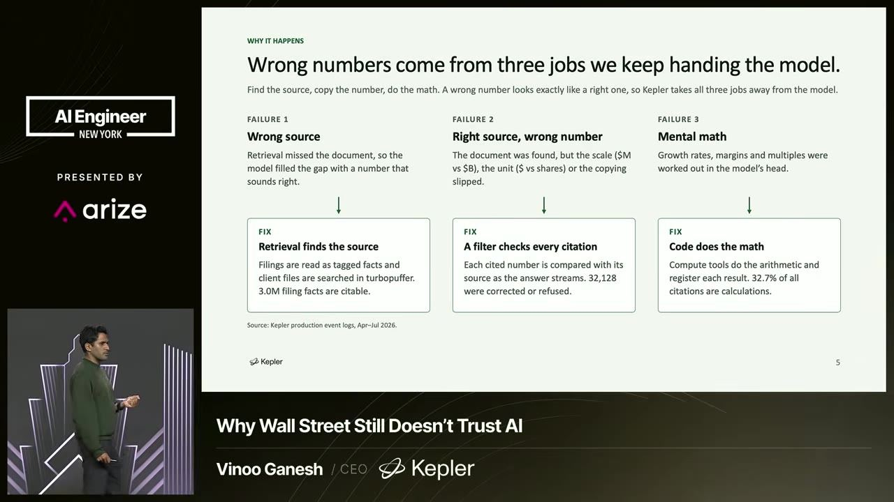
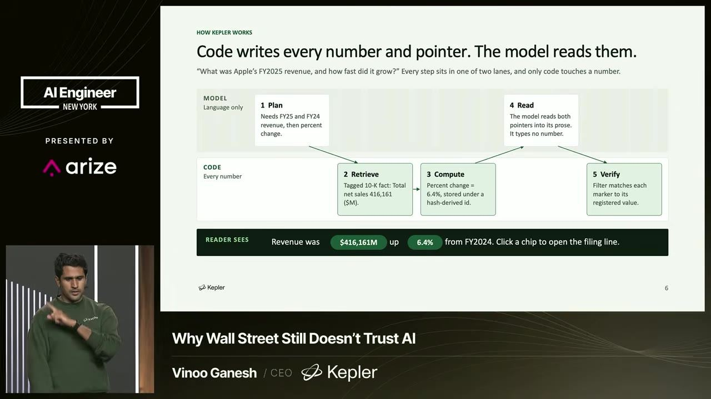
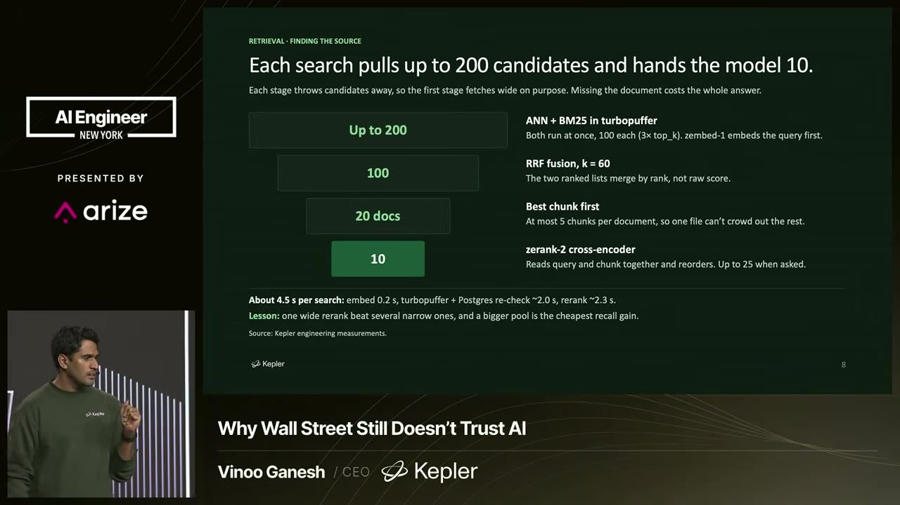
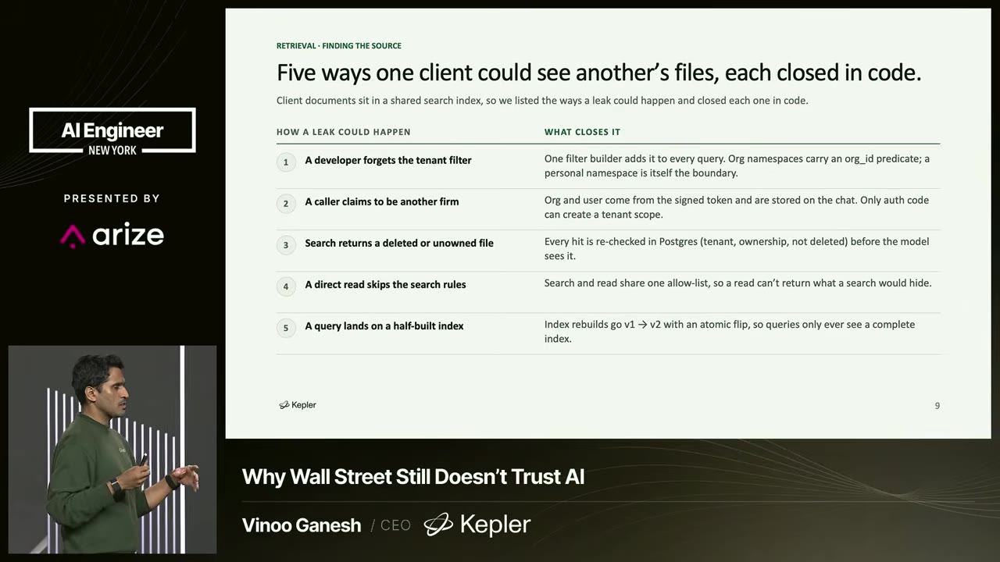
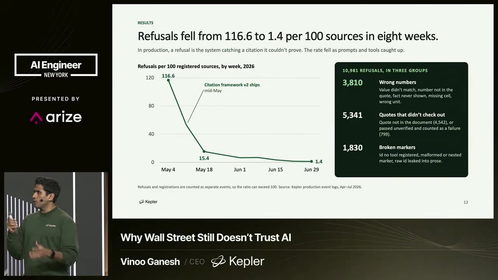

essencial do dia: Mostra uma arquitetura concreta em que o modelo só aponta para fatos extraídos por código, com números de produção sobre recusas e correções.
Como impedir que a IA invente números
AI Can't Make Up a Number It Can't Look Up
Para ter números confiáveis, deixe o modelo só apontar para fatos que o código já extraiu, em vez de conferir o texto depois.
Depois deste talk você consegue desenhar um fluxo em que o modelo cita IDs de fatos extraídos por código e nunca escreve o número sozinho
Em 3 frases
Vinoo Ganesh, CEO da Kepler, diz que números errados vêm de três falhas: documento errado, número errado no documento certo e conta feita de cabeça pelo modelo.
A Kepler extrai cada fato com código, dá um ID a ele e deixa o modelo apenas planejar e apontar para esses IDs. Se o ponteiro não resolve, o número não aparece, e a citação é corrigida ou recusada.
A busca é larga e depois estreita (ANN mais BM25, fusão, cross-encoder), e o acesso aos documentos é limitado por cliente. Ele fecha com perguntas para fazer a qualquer fornecedor de IA.
Antes de ler
- Reciprocal rank fusion (RRF) fusão por posição no ranking analogia abaixo
- Re-ranker modelo que reordena candidatos e escolhe os melhores analogia abaixo
- Hallucination alucinação analogia no glossário
- Sistema determinístico deterministic system (mesma entrada, mesma saída) analogia no glossário
- Grounding ancoragem nos dados analogia no glossário
- Provenance proveniência (origem da informação) analogia no glossário
Três origens de número errado
O palestrante separa o problema em três falhas: recuperar o documento errado, tirar o número errado do documento certo (por exemplo, o ano errado em um 10-K) e deixar o modelo fazer conta. Cada falha pede um conserto diferente, e um filtro no fim só pega parte delas.


(ampliar imagem)Código escreve o número, o modelo planeja
Um pré-processamento transforma dados não estruturados em um repositório estruturado, e cada fato recebe um ponteiro com ID único. O modelo planeja e pede a busca, mas só imprime um número se conseguir resolver o ponteiro. Sem ponteiro válido, o fato não sai na resposta.


(ampliar imagem)Busca larga, depois estreita
A busca combina ANN (vizinhos aproximados em vetores) e BM25, devolve até 200 documentos, funde os rankings até chegar a cerca de 60 e aplica um cross-encoder sobre consulta e trecho. Ele diz que LLMs tendem a buscar em profundidade porque buscar largo custa caro.


(ampliar imagem)Mais 2 ideias deste talk
Cinco falhas de segurança na busca
Ele lista erros comuns ao montar busca de documentos: esquecer o filtro de cliente, aceitar quem afirma ser outra empresa, devolver dado desatualizado, ler direto sem passar pelas regras de busca e consultar índice não populado. A saída é escopar toda busca com segurança embutida.


(ampliar imagem)Verificado, corrigido ou recusado
Os IDs de fonte são hashes. Se o modelo pede um ID que não existe, é como ler uma chave ausente em um hash map: volta nada. Por isso toda citação sai verificada, corrigida na busca ou recusada. Nos dados de produção, as recusas caíram muito, mas não a zero.


(ampliar imagem)Reciprocal rank fusion (RRF) (fusão por posição no ranking). RRF é como juntar o ranking de dois jurados de um campeonato de ginástica, somando pontos pela posição que cada atleta recebeu de cada jurado.
- Quando duas buscas diferentes devolvem duas listas de resultados, é preciso decidir uma ordem final única.
- Reciprocal rank fusion (RRF, fusão por posição recíproca) junta as listas olhando só a posição de cada documento, sem comparar as notas originais.
- Cada documento ganha 1 dividido por (k + posição) em cada lista, com k perto de 60, e os pontos das listas são somados.
- Isso resolve um problema prático. A nota do BM25 (busca por palavra) e a similaridade de vetores usam escalas diferentes, mas a posição vale para as duas.
- No talk, a Kepler parte de até 200 documentos vindos de ANN e BM25 e usa a fusão para ficar com cerca de 60 antes do re-ranker.
Ajuda saber antes: Busca híbrida, RAG, Embedding
Re-ranker (modelo que reordena candidatos e escolhe os melhores). Um re-ranker é como o técnico que recebe 60 nomes da peneira e assiste cada jogador em campo antes de escolher os titulares.
- Um re-ranker (reordenador) pega uma lista curta de resultados de busca e coloca os mais úteis no topo.
- A primeira busca é rápida e larga, mas erra a ordem. O re-ranker é mais lento e mais preciso, por isso roda só sobre poucos candidatos.
- O tipo comum é o cross-encoder (codificador cruzado). Ele lê a pergunta e o trecho juntos e devolve uma nota de relevância para o par.
- A busca por vetores compara resumos feitos separadamente. O cross-encoder enxerga as palavras da pergunta e do trecho ao mesmo tempo e pega detalhes que a busca perde.
- Na Kepler, o funil busca largo com ANN e BM25, funde os rankings e aplica o cross-encoder no fim, porque o LLM sozinho tende a parar no primeiro documento.
Ajuda saber antes: RAG, Busca híbrida, Embedding, LLM
O talk é pitch da Kepler, e o palestrante é o CEO. Ele cita a concorrência sem nomeá-la e diz que copiaram só a parte errada, sem prova. Os dados de produção aparecem em um gráfico sem valores ditos em voz alta e sem comparação com outro método. O ponteiro garante que o número existe na base, mas não que a extração do 10-K esteja correta nem que o fato escolhido responda à pergunta. O talk também não explica como a Kepler mede erro de extração.
Teste você mesmo
Responda de cabeça antes de abrir. Lembrar com esforço é o que fixa.
- lembrar Por que o modelo da Kepler não consegue imprimir um número que não existe na base?
Ver resposta
Porque o código extrai antes cada fato e lhe dá um ID (hash). O modelo só imprime um número se resolver o ponteiro desse ID. Se o ID não existe, nada volta, como ao ler uma chave ausente de um hash map.
- aplicar Você tem um assistente que responde sobre contratos e valores. Como aplicaria a ideia dos ponteiros?
Ver resposta
Extraia os valores dos contratos com código, guarde cada um com um ID e a fonte, e faça o modelo citar apenas IDs. Um passo em código troca o ID pelo valor e recusa qualquer ID que não resolva. Somas e comparações também rodam em código.
- criticar O que o talk não prova sobre a confiabilidade desse método?
Ver resposta
O ponteiro garante que o número existe na base, não que a extração do documento está certa nem que é o fato certo para a pergunta. Os dados de produção vêm da própria empresa, sem valores ditos nem comparação com outro método, e as recusas não chegaram a zero.
Mini verificador de ponteiros em Python
Você precisa de: Python 3 e acesso a Claude ou ChatGPT
- Crie um dicionário com 5 fatos numéricos de um relatório seu, cada um com um ID curto gerado por hash (hashlib) e a fonte.
- Peça ao modelo para responder uma pergunta usando apenas IDs, no formato [id:abc123], sem escrever nenhum número.
- Escreva uma função que troca cada [id:...] pelo valor do dicionário e marca como recusado qualquer ID que não exista.
- Repita a pergunta com a instrução de escrever os números direto e compare as duas respostas com o relatório original.
Deu certo se: Toda resposta por ponteiros traz só valores presentes no dicionário, e IDs inventados aparecem como recusados.
O que fazer com isso
- Revise uma ferramenta de IA que você usa com números e pergunte ao fornecedor se o modelo escreve ponteiros e se cada citação e cada conta são checadas na fonte.
- Liste os três tipos de erro (documento, número, conta) nas falhas do seu sistema de RAG e conte quantas ocorrências caem em cada um.
- Troque contas feitas pelo modelo por chamadas a uma função em código que recebe IDs de fatos e devolve o resultado.
- Confira se toda consulta de documentos do seu sistema filtra por cliente e usuário antes da busca, e escreva um teste que tenta ler dado de outro cliente.
Conversa com outros talks
- aprofunda Como impedir o modelo de inventar números · O mesmo palestrante da Kepler volta ao tema e detalha busca, verificação e os resultados em produção.
- Como impedir o modelo de inventar números · 25 out · em comum: Busca híbrida, Hallucination, Multi-tenancy
- Busca híbrida para agentes com BM25 e vetores · 12 out · em comum: Busca híbrida, Re-ranker, Reciprocal rank fusion (RRF)
- Onde fica a vantagem do investidor na era da IA · 20 out · em comum: Hallucination, Provenance, Sistema determinístico